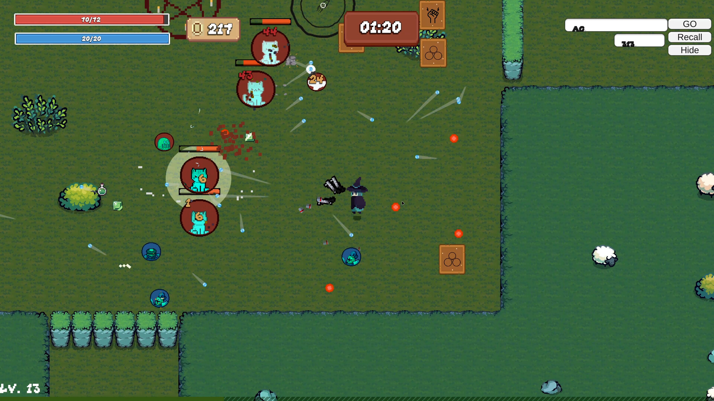
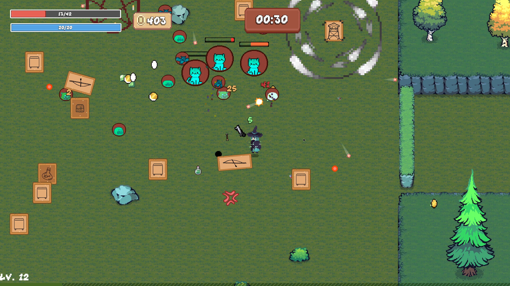
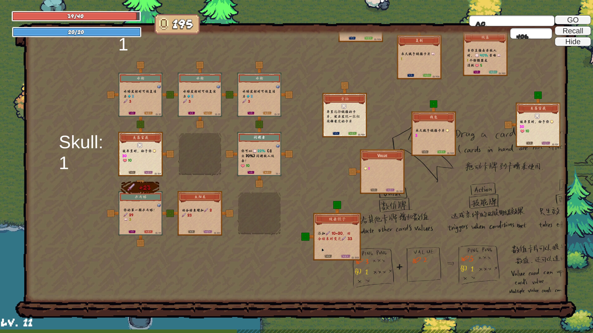
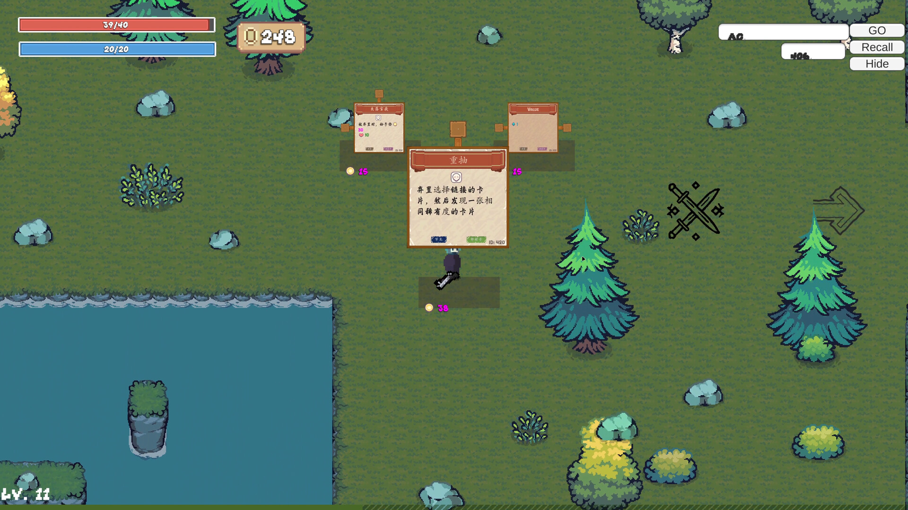
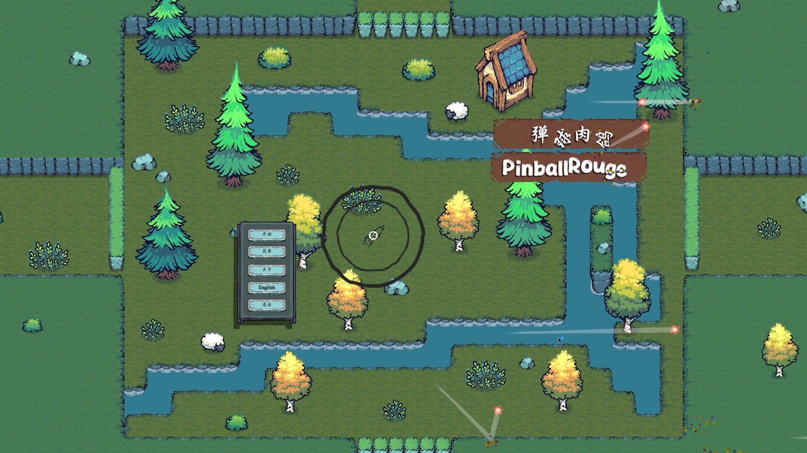
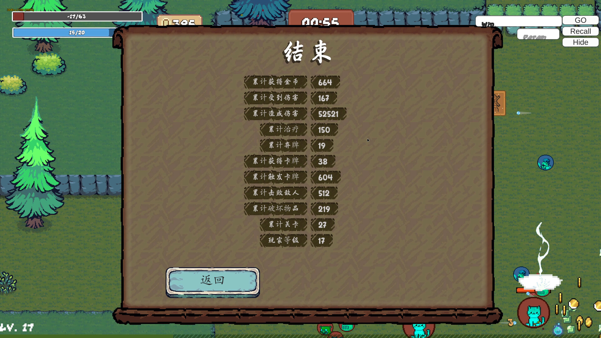

Pinball Rouge
Unity / C# · Steam · 2025.11.16
A top-down roguelite combining pinball shooting with card builds. Clear enemies with ricocheting projectiles, explore rooms, and combine cards and abilities to shape your playstyle.
The project began as Orange Dawn, a team prototype in 2023. I continued its development independently and released it on Steam as Pinball Rouge in 2025. My work spans gameplay and systems design, Unity programming, and prototype iteration.
Ricochet combat
Automatic shooting puts the focus on movement and survival. Projectiles bounce on impact like pinballs, while players find space between enemies and incoming fire. Movement, ricochet paths, and ability effects work together to shape each encounter.




Card builds
Cards are both combat rewards and tools for changing how you play. Drag cards into slots and combine values and effects to experiment with weapons and abilities, turning the choices made during a run into your own build.




Exploration & progression
Progress through rooms, fight, collect rewards, and refine your build. The room system connects combat, shops, events, and bosses. Difficulty options let players choose their challenge, while the results screen offers a look back at the run.




Design & development
I handle gameplay and systems design, alongside prototyping and implementation in Unity / C#. The work spans weapons and projectile ricochets, card data and drag-and-drop interactions, room transitions, menus, settings, and run statistics, connecting combat, builds, and progression into a playable game.
The 2023 team prototype established the starting point. I continued development independently, refining the gameplay and bringing the game to Steam. The source repository retains the Orange Dawn name to preserve the project’s development history.